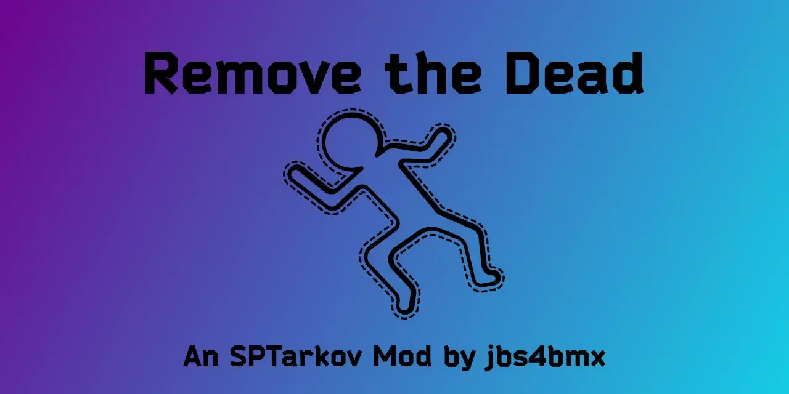

Remove The Dead
- Downloads
- 9,015
- Favourites
- 18
- Mod lists
- 21

A BepInEx mod for Escape From Tarkov via the modding framework, SPT (aka, SPTarkov, Single Player Tarkov, SPT, etc.).
What this mod does.
Allows you to set a radius and time interval in which dead bots will be removed from the map.
Allows you to manually enforce the removal by clicking on a button in the BepInEx F12 menu.
Allows you to manually enforce the removal by clicking on a shortcut key of your choice (default is F5).
This mod also removes non-interactable firearms from the map that are usually leftover when you remove dead bot entities.
Why this mod?
The aim of this mod is to boost performance and increase in-game fps by reducing the number of objects (in this case, dead bots) being processed by the CPU.
It further aims to improve upon performance by also removing the firearm entities that are typically left over when you remove the dead bot entity.
This mod is based on B.D.S.M. by Helldiver, but also provides the ability to manually run the removal process.
Incompatibilities:
FIKA - Sorry, but No; I will not be adding support for Fika in the future. I just don’t have the time to support that kind of a workload.
Extract the contents of the zip file to the “root” of your SPT folder.
- The same location as EscapeFromTarkov.exe.
Delete the “RemoveTheDead.dll” file from the “[SPT]/BepInEx/plugins” folder.
Compatibility with other mods is neither expressed nor implied. (Attempts will be made to correct this, but cannot be guaranteed.)
Support is neither expressed nor implied. (There is no guarantee of expedited or resultant service.)
Support is definitely NOT given to earlier versions of the mod.
If you would like to report an issue or make feature suggestions, please do so on Github
Credit must be given to the following mod developers as code was borrowed from some of their mods to build this one.
Modders: DJLang, Helldiver, Devraccoon, CactusPie
Some code is borrowed from “Body Disposal Service Maid (B.D.S.M.)” by DJLang, which is an updated version of “Body Disposal Service Maid (B.D.S.M.)” by Helldiver. Some code is borrowed from “RAM Cleaner Fix” by CactusPie, of which, is updated by Devraccoon.
NOTE:
As of SPT 3.11.0+, most of the code in this mod has been rewritten and may now be quite a bit different than the referenced mods. Some similarities between the code may still exist.
This is definitely not required and you have every right to ignore this tab, but if you would still like to buy me a coffee, I’d greatly appreciate it. Any and all proceeds will go towards further development/maintenance of mods.
Version
4.0.1
Change Log - v4.0.1
Optimizations
- [✅] Decrease strain on CPU during removal actions.
- [✅] Increase efficiency of internal code related to bot search.
- [✅] Increase efficiency of internal code related to bot weapon search.
- [✅] Increase efficiency of bot/player radius calculation code.
- [❌] Increase efficiency of bot/player distance calculation code. (Included in radius calculation code.)
Restructuring
- [✅] Reduce methods.
- [✅] Cleanup code.
- [✅] Remove unecessary duplicate code actions.
- [✅] Combined code from
update()functions into one uniformupdate()function.
Additions
- Added mod check logging to verify mod it active.
- [✅] Entry can be found in
{SPTGameDir}\BepInEx\LogOutput.logor{SPTGameDir}\BepInEx\FullLogOutput.log
- [✅] Entry can be found in
- Added debug logging.
- [✅] Entries can be found in
C:\Users\{username}\AppData\LocalLow\Battlestate Games\EscapeFromTarkov\Player.log - [🚧] Removed all unnecessary logging to keep log spam to a minimum.
- [✅] Entries can be found in
- Loot Handling
- [🚧] Backpack drop option. Allow dropping of bot backpack with bot’s loot items.
- Statistics
- [🚧] Log total count of bots removed from game for each scene (debugging).
- [❌] Display running total of bots removed from game while in scene.
Testing
- Verified functionality in the following metrics.
- [✅] BepInEx menu functions show up correctly.
- [✅] Automated time-delayed bot removal service.
- [✅] Enable/Disable feature for automated removal service.
- [✅] Modification of timer amount displays and calculates correctly.
- [✅] Shortcut key bot removal action.
- [✅] BepInEx menu button bot removal action.
- [✅] Enable/Disable feature for debugging log.
- [✅] Verify existence of debugging log entries.
Key:
- [✅] = Task fully completed.
- [❌] = Task canceled or not completed.
- [🚧] = Task pending review or completion.
VirusTotal Results
- MD5: 55ca97882bdbbb109897ce915f19b4ad
- SHA-1: 326339fd1bad83f396b93568e595f9b381df76c3
- SHA-256: 7c3021b37bac82ccc21294952c58bb22dca9cc50169c68607c2351ea39b7005a
- Vhash: 88ceabb2c92d3e7eeead3c2163fefa4a
- SSDEEP: 192:qOvW+7EqScf3MNRMYyuOQr6aLCr7RInbcYd6DZ:DbScf3JvgpLCqCDZ
- TLSH: T1A0F18EB1946E1B80D09160735B48766979ECE98672906BF2B62C2C14974DFB0AAF7442
- File type: ZIP
- File size: 7.29 KB (7466 bytes)
Version
4.0.0
Add support for SPT 4.0.0+ and EFT 0.16.9.0.40087
NEW: Version of mod now matches SPT base release version.